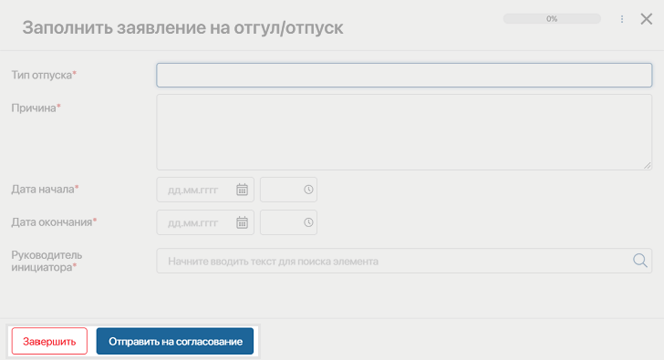
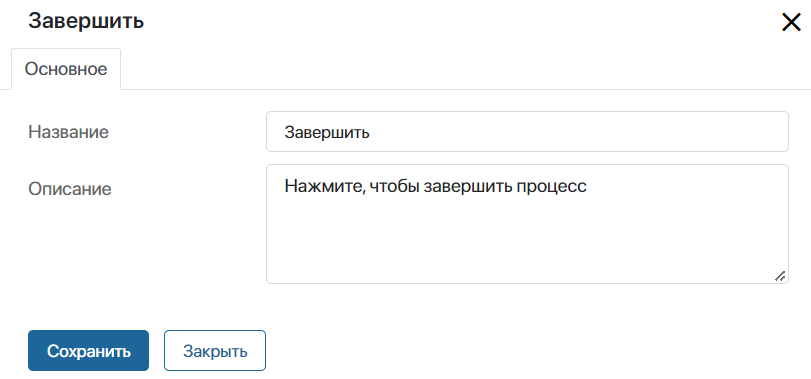
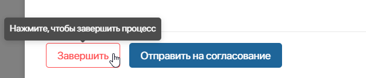
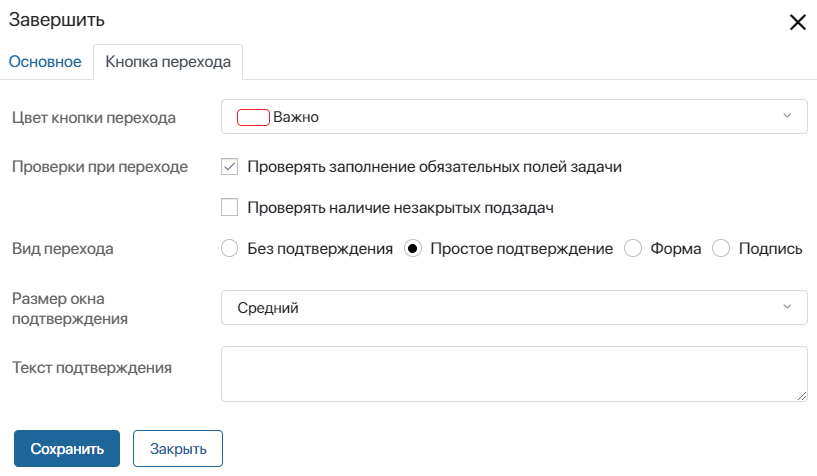
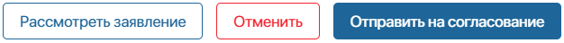
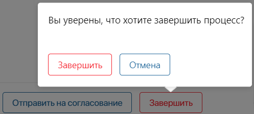
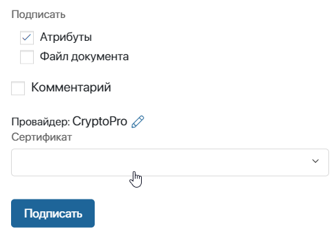
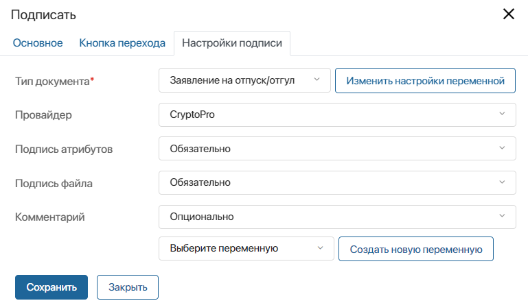
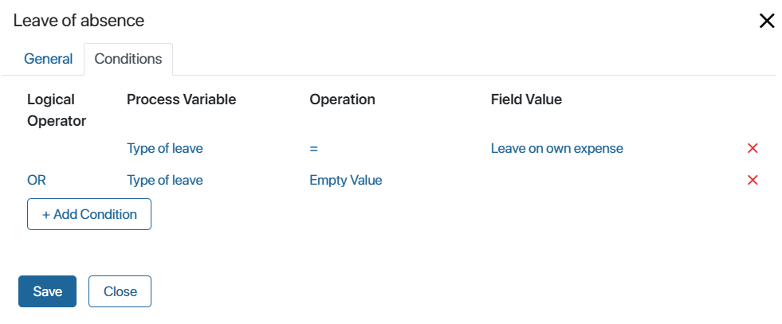

Переход задаёт порядок выполнения действий и определяет последовательность событий в процессе. Подписи к переходам повышают наглядность схемы, а также служат названиями кнопок на формах задач.
Например, у задачи Заполнить заявление на отпуск/отгул есть два исходящих перехода: Завершить и Отправить на согласование.

На форме задачи эти переходы выглядят так:

Создание и настройка перехода
Чтобы создать переход между графическими элементами, наведите курсор на один из них, а затем, зажав левую кнопку мыши, проведите соединительную линию от одной из точек, расположенных по его краям.
Чтобы открыть настройки перехода, дважды нажмите на него на схеме процесса.
На вкладке Основное вы можете изменить название перехода и добавить описание. Дополнительные настройки зависят от типа перехода:
- из задачи — можно выбрать цвет кнопки, настроить проверку данных, указать вид перехода и включить подписание элемента приложения;
- из шлюза — можно задать условия перехода процесса по той или иной ветке.
Далее рассмотрим все настройки подробнее.
Вкладка «Основное»

- Название — укажите название, которое будет отображаться на кнопке перехода в задаче;
- Описание — введите текст подсказки, всплывающей над кнопкой перехода на форме задачи.

Переход из блока «Задача»
В настройках перехода из задачи вы можете выбрать цвет кнопки, а также задать параметры для проверки данных в задаче, подтверждение перехода, подписание элемента приложения и др.
Вкладка «Кнопка перехода»

- Цвет кнопки перехода — выберите цвет заливки или контура кнопки на карточке задачи
- Проверки при переходе — выберите опцию проверки, которая будет происходить при нажатии на кнопку перехода:
- Проверять заполнение обязательных полей задачи — пользователь не сможет закрыть задачу, пока не заполнены все обязательные поля на форме;
- Проверять наличие незакрытых подзадач — задачу нельзя будет закрыть, если в ней имеются незавершённые подзадачи.
Вы можете выбрать сразу обе опции или оставить переход без проверок.
- Вид перехода — опция позволяет настроить окно подтверждения действия, которое будет всплывать при нажатии на кнопку перехода:
- Без подтверждения — при нажатии на кнопку перехода задача будет сразу закрыта без подтверждения действия;
- Простое подтверждение — укажите размер окна и введите текст подтверждения в появившихся ниже полях;

- Форма — настройте форму подтверждения и добавьте на неё контекстные переменные процесса. Например, пользователь сможет оставить комментарий перед закрытием задачи. Выберите эту опцию, укажите размер окна и текст подтверждения, а затем нажмите кнопку Настроить форму.
В открывшейся вкладке Настройка формы выберите переменную из контекста процесса или добавьте новую;
- Подпись — выберите этот вида перехода, чтобы настроить окно подписания элемента приложения, по которому поставлена задача. При этом добавится вкладка Настройки подписи. На ней задайте элемент приложения и определите параметры его подписания.
Подписание при переходе из задачи. Вкладка «Настройки подписи»
В настройках перехода из задачи можно включить подписание. Используйте эту опцию, когда задача поставлена по элементу приложения. В таком случае пользователь одним действием подпишет элемент и выполнит задачу. При этом можно подписать атрибуты и файл документа, оставить комментарий или изменить провайдера.

Настройка подписания при переходе из задачи требует предварительных действий:
- Создайте контекстную переменную с типом Приложение, которая будет хранить элемент для подписания. Она заполняется пользователем на форме задачи, из которой вы настраиваете переход, или может быть заполнена на предыдущих этапах процесса.
- На форму задачи добавьте поля для выбора, создания или изменения атрибутов элемента приложения, который будет подписан. Если элемент задан до перехода процесса к текущей задаче, отобразите его значение в задаче.
Например, пользователь запускает процесс обработки заявления и получает задачу, в которой он создаёт элемент приложения Заявления. Затем на форме этой же задачи пользователь нажимает кнопку Подписать заявление. В открывшемся окне подписания он выбирает сертификат и нажимает Подписать. После этого процесс переходит к следующему этапу, при этом в карточке заявления отобразится информация о подписи.
Обратите внимание, настроить подписание элемента приложения можно также с помощью блока Подписать. Учитывайте следующие отличия двух вариантов подписания:
- в блоке Подписать доступны только две резолюции, подписать или отклонить. В задаче вы можете добавить дополнительные переходы, например, отправить на доработку, подписать с замечаниями, делегировать подписание;
- в блоке Подписать доступен только просмотр элемента. В задаче пользователь может создать или выбрать документ и сразу подписать его. Таким образом путь до результата сокращается, два действия выполняются в одном блоке.
Важно: у пользователя на компьютере должен быть установлен сертификат электронной подписи одного из доступных в системе провайдеров. Также включите модули провайдеров, чьими сертификатами будут пользоваться сотрудники. Подробнее читайте в статье «Настройка электронной подписи».
На вкладке Настройки подписи заполните поля:

- Тип документа* — выберите переменную, в которой задан подписываемый элемент приложения;
- Провайдер — выберите из списка провайдера, чей сертификат применится по умолчанию для подписания;
- Подпись атрибутов — установите обязательность подписи атрибутов элемента приложения:
- Не использовать — при подписании элемента приложения атрибуты не подпишутся;
- Опционально — пользователь сможет определить тип подписания: с атрибутами или без. По умолчанию подписание атрибутов отключено. Для включения в окне подписания элемента необходимо отметить опцию Атрибуты;
- Предпочтительно — пользователь сможет определить способ подписания. По умолчанию подписание атрибутов включено. В окне подписания пользователь сможет выключить опцию Атрибуты;
- Обязательно — при подписании элемента приложения пользователь автоматически подпишет атрибуты;
- Подпись файла — если для подписи задан элемент приложения типа Документ, в окне подписания отобразится опция для подписи его файла. Настройки в этом поле аналогичны настройкам поля Подпись атрибутов;
- Комментарий — настройте возможность оставить комментарий к подписи. Выберите опцию из списка: Не использовать, Опционально, Предпочтительно, Обязательно. Также вы можете сохранить комментарий пользователя в контекстную переменную. Для этого выберите её или создайте в поле, указанном ниже.
Переход из шлюза/задачи с множественным исполнением
Для переходов из шлюза или задачи с множественным исполнением доступна вкладка Условия перехода. Здесь задаются условия, при которых процесс пойдёт по той или иной ветке.
Вкладка «Условия перехода»

- Переменная процесса — укажите переменную из контекста процесса. Для переходов из некоторых задач доступны определённые значения, например, для блока Согласование можно указать процент согласования или отказа;
- Операция — задайте оператор сравнения для проверки конкретного условия;
- Значение поля — введите значение, при котором условие будет выполняться;
- Связка — это логическая операция, которая используется для проверки нескольких условий. Если результат проверки Истина, то процесс продолжается по данному переходу:
- И — результат Истина, если выполняются оба условия;
- ИЛИ — результат Истина, если выполняется хотя бы одно условие;
- И НЕ — результат Истина, если выполняется первое условие, и в то же время не выполняется второе условие;
- ИЛИ НЕ — результат Истина, если выполняется первое условие либо если не выполняется второе.
Подробнее о применении переходов с условиями в процессах читайте в статье «Примеры настройки переходов».
Обратите внимание, условия проверяются в том порядке, в котором они перечислены в настройках перехода.
Для задач с множественным исполнением условия перехода проверяются каждый раз, когда один из исполнителей завершает задачу.
Если условия перехода из шлюза или задачи со множественным выполнением не заданы, при проверке процесса вы увидите предупреждение об ошибке в нижней части страницы.